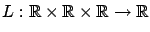
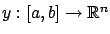
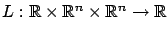
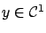

The reader has probably observed that the problems of Dido, catenary, and brachistochrone, although different in their physical meaning, all take essentially the same mathematical form. We are now ready to turn to a general problem formulation that captures these examples and many related ones as special cases. For the moment we ignore the issue of constraints such as the arclength constraint (2.1), which was present in Dido's problem and the catenary problem; we will incorporate constraints of this type later (in Section 2.5).
The simplest version of the calculus of variations problem can be stated as follows. Consider a function

.
Basic Calculus of Variations Problem: Among all
 curves
curves
 satisfying given boundary conditions
satisfying given boundary conditions
Since  takes values in
takes values in
 , it represents a
single planar curve connecting the two fixed points
, it represents a
single planar curve connecting the two fixed points  and
and  .
This is the single-degree-of-freedom case. In the
multiple-degrees-of-freedom case, one has
.
This is the single-degree-of-freedom case. In the
multiple-degrees-of-freedom case, one has

and accordingly
. This generalization is useful for treating spatial curves (
is made to ensure that
The function  is called the Lagrangian, or the running cost. It is clear that a maximization problem can always be converted into a minimization problem by flipping the sign of
is called the Lagrangian, or the running cost. It is clear that a maximization problem can always be converted into a minimization problem by flipping the sign of  . In the analysis that follows, it will be important to remember the following point: Even though
. In the analysis that follows, it will be important to remember the following point: Even though  and
and  are the position and velocity along the curve,
are the position and velocity along the curve,
 is to be viewed as a function of three
independent variables. To emphasize this fact, we will sometimes write
is to be viewed as a function of three
independent variables. To emphasize this fact, we will sometimes write
 . When deriving optimality conditions, we will need to impose some differentiability assumptions on
. When deriving optimality conditions, we will need to impose some differentiability assumptions on  .
.